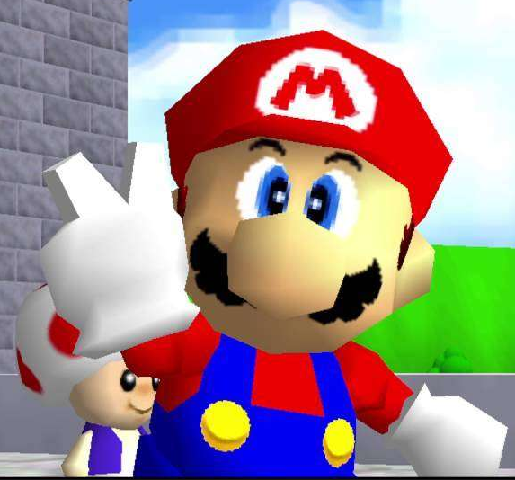
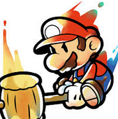

Mario est apparu en 1981, dans le jeu Donkey Kong créé par Shigeru Miyamoto et Gunpei Yokoi, suite à l'échec de la borne d'arcade Radar Scope. Pendant le développement, il était nommé Ossan, ce qui signifie homme d’âge moyen. Ensuite, Miyamoto aurait voulu lui donner le nom de Mr. Video, mais ce fut finallement Jumpman qui a été choisi, son nom le plus célèbre après Mario. Dans ce premier jeu, Jumpman doit sauter par dessus des tonneaux en grimpant sur des échafaudages pour délivrer Pauline que Donkey Kong, le gorille, avait capturé. Dans ce jeu Mario était charpentier, mais il deviendra plombier par la suite (depuis mario odyssée il n'est plus plombier) Dans Mario Bros., adieu Donkey Kong. Mario se fait cette fois accompagner de son frère Luigi Le jeu apporte par exemple la première version des Koopas,C'est le 13 septembre 1985 que va sortir le jeu qui fera véritablement succès de Mario. En effet, Super Mario Bros. est le deuxième jeu le plus vendu au monde ! Et c'est Miyamoto, aidé par Takashi Tezuka, qui va confectionner ce chef d'œuvre pour la NES, console de l'époque.Ce jeu introduit également quelques personnages et ennemis célèbres comme Bowser, la princesse Peach, et les Toads, par exemple. C'est également le cas pour les musiques qui vont devenir très connues, composées par Koji Kondo.Mario va alors connaître un énorme succès qui va lui permettre d'apparaitre dans de nombreux jeux par la suite, aussi bien de sport que de plateforme ! Il compte aujourd'hui plus de 200 apparitions.
Mario porte une moustache car à l'époque faire une bouche était trop compliqué à cause des pixels, de même pour la casquette, il était impossible d'avoir un niveau de détail élevé, alors, autant lui faire porter un chapeau ! En plus, animer les cheveux de Mario aurait été bien difficile à l'époque. Enfin, la salopette permet de différencier les bras du corps.
Mario est ensuite passer en 3D (pour la premiere fois sur nintendo 64),dans de jeu de plateforme comme dans Mario 64 , des jeu de sport comme Mario et Sonic au jeux olimpyque,des jeux de societés comme Mario Party ou même de course comme Mario kart. Il existe toujours des mario 2D mais ils ont des graphismes 3D.
Il existe même sous forme de papier comme dans paper mario.

Shigeru Miyamoto né le 16 novembre 1952 à Sonobe, est un créateur et producteur japonais de jeu vidéo depuis 1977. Après des études de design industriel, Miyamoto entre chez Nintendo en 1977, lorsque la société passe de spécialiste des jeux de cartes aux jeux vidéo. Miyamoto participe alors à la création de nombreux jeux sur arcade puis sur les consoles de la firme nippone. Il est le co-créateur des franchises Super Mario, Donkey Kong, The Legend of Zelda, Star Fox, F-Zero et Pikmin pour le compte de Nintendo. Certains des jeux de ces séries sont considérés comme les meilleurs de leur génération, Il a également supervisé de nombreux titres édités par Nintendo et développés par d'autres studios. Shigeru Miyamoto est considéré comme l'une des plus grandes figures du jeu vidéo, parfois surnommé le « Spielberg des jeux vidéo ». En 1998, il a été la première personne à entrer au Hall of Fame de l'Academy of Interactive Arts and Sciences. Il est actuellement responsable créatif de Nintendo, poste qu'il occupe depuis septembre 2015 et la prise de fonction de Tatsumi Kimishima en tant que PDG.